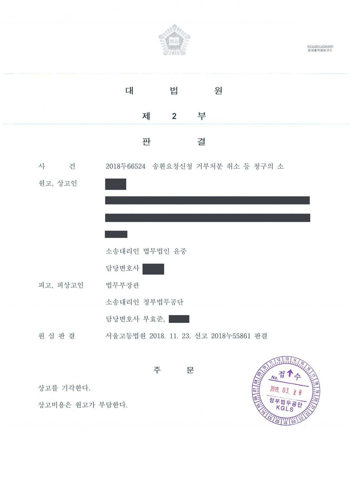

범죄인 송환요청 신청에 대한 부작위위법확인 소송 (2·3심)
서울고등법원 2018누55861 · 대법원 2018두66524 · 담당변호사 부효준
판결문


사건의 요지
외국에서 형사재판을 받는 국민이 범죄인 인도조약에 따른 송환 요청을 하여 달라고 신청한 데 대한 부작위의 위법 확인을 구한 사건으로, 신청권의 존부와 부작위위법확인소송의 요건이 다투어졌습니다.
사건의 주요 내용
원고는 외국에 거주하면서 그 나라에서 형사재판을 받고 있던 국민입니다. 원고는 상대국의 재판이 범죄인 인도의 특정성의 원칙에 위배된다는 입장에서, 2017년 9월 1일 피고 행정청(범죄인 인도 업무를 관장하는 중앙행정기관의 장)에게 범죄인 인도조약과 범죄인 인도법에 따라 자신의 송환을 상대국에 요청하여 달라는 신청을 하였습니다.
피고 행정청이 이에 응답하지 않자 원고는 송환요청신청 거부처분의 취소 등을 구하는 소송을 제기하였고, 항소심에서는 2017년 9월 1일자 신청에 대한 피고의 부작위가 위법함을 확인하라는 청구를 하였습니다. 제1심(서울행정법원 2017구합78629)이 청구를 받아들이지 않자 원고가 항소하였고, 부효준 변호사는 항소심과 상고심에서 피고 행정청을 대리하였습니다.
쟁점
- 외국에서 형사재판을 받는 국민이 정부에 대하여 범죄인 인도조약에 따른 송환 요청을 하여 달라고 신청할 권리가 있는지
- 범죄인 인도조약과 범죄인 인도법상 특정성의 원칙 위배를 이유로 정부가 상대국의 재판을 중단시키거나 송환을 요청할 의무가 있는지
- 그러한 의무가 기속행위 또는 재량권의 영으로의 수축 법리에 의하여 인정될 수 있는지
원고의 주장
- 범죄인 인도조약과 범죄인 인도법에 따라 피고 행정청에는 특정성의 원칙 위배를 이유로 상대국의 재판을 중단시키거나 원고의 송환을 요청할 의무가 있다고 주장하였습니다.
- 그러한 조치는 기속행위이거나 재량권이 영(0)으로 수축되는 경우에 해당하므로, 신청에 응답하지 않은 부작위는 위법하다고 주장하였습니다.
부효준 변호사의 주장
- 범죄인 인도조약과 범죄인 인도법은 조약 상대국에 송환을 요청하거나 상대국의 재판을 중단시킬 의무를 정부에 부과하는 규정을 두고 있지 않으므로, 원고에게 그러한 조치를 요구할 신청권이 없고 피고 행정청에게 신청에 응하여 처분을 할 법률상 의무도 없다고 주장하였습니다.
- 범죄인 인도 관련 조치는 외교관계와 사법공조에 관한 광범위한 재량이 인정되는 영역이므로, 기속행위이거나 재량권이 영으로 수축되는 경우라는 원고의 주장은 관련 규정의 내용과 입법 취지에 비추어 받아들일 수 없다고 반박하였습니다.
법원의 판단
항소심은 제1심 판결의 이유를 일부 고쳐 그대로 인용하면서, 범죄인 인도조약과 범죄인 인도법의 관련 규정에는 피고 행정청이 특정성의 원칙 위배를 이유로 상대국의 재판을 중단시키거나 원고의 송환을 요청하여야 할 근거가 없다고 보았습니다. 아울러 관련 규정의 내용과 입법 취지에 비추어 보면 기속행위 또는 재량권의 영으로의 수축을 근거로 그러한 의무가 있다는 원고의 주장도 받아들일 수 없다고 하였습니다.
이에 따라 원고의 청구를 받아들이지 않은 제1심 판결이 정당하다고 보아 2018년 11월 원고의 항소를 받아들이지 않았고, 원고가 상고하였으나 대법원은 2019년 3월 상고이유가 상고심절차에 관한 특례법 제4조 제1항의 사유를 포함하지 않거나 이유가 없다고 보아 심리불속행 판결로 상고심을 마무리하였습니다. 이로써 피고 행정청의 부작위가 위법하지 않다는 결론이 확정되었습니다.
그리고 위 관련 규정의 내용 및 입법 취지 등에 비추어 보면, 기속행위 또는 재량권의 영으로의 수축 등을 근거로 피고에게 특정성의 원칙 위배를 이유로 재판을 중단시키거나 송환을 요청할 의무가 있다는 취지의 원고의 주장도 받아들일 수 없다.
서울고등법원 2018누55861 판결 이유 '1. 제1심 판결의 인용' 중 제1심 판결 제7면 10행을 고쳐 쓴 부분
※ 판결 이유 가운데 이 사건의 판단 기준이 된 부분을 그대로 옮긴 것으로, 당사자 이름 등은 가렸습니다.
이 사건이 보여 주는 것
부작위위법확인소송은 행정청이 법률상 응답 의무가 있는 신청에 대하여 상당한 기간 안에 아무런 처분을 하지 않은 경우에만 허용됩니다. 이 사건은 국민이 외국에서 받는 형사재판과 관련하여 정부에 송환 요청 같은 조치를 취하여 달라고 신청하더라도, 범죄인 인도조약과 범죄인 인도법에서 그러한 의무를 정하고 있지 않은 이상 정부의 무응답을 위법한 부작위로 다툴 수 없다는 점을 보여 줍니다.
조약과 법률의 문언과 입법 취지에서 의무의 근거를 찾을 수 없는 경우에는 기속행위나 재량권의 영으로의 수축 법리로 행정청의 작위의무를 끌어내기도 어렵다는 점이 함께 확인되었습니다.
비슷한 처분을 받으셨다면
행정처분은 처분이 있음을 안 날부터 90일 이내에 행정심판이나 취소소송으로 다투어야 하고, 기간이 지나면 돌이킬 수 없는 처분은 집행정지를 서둘러야 합니다. 처분서를 받은 날짜부터 확인해 드립니다.